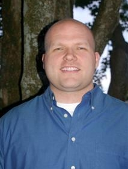

Series: Meet the Dream Team Members
(In January 2007, we announced the 11
charter members of the NetBeans
Dream
Team, a community-oriented group of highly skilled NetBeans users
devoted to promoting NetBeans and working on the NetBeans Project. In
these interviews discover who they are, why they are passionate about
NetBeans and what goals they have for the NetBeans project.)
Wade Chandler

Please
tell us a bit about yourself.
I've been a software engineer since 2000. Currently, I work for Decision Dynamics, Inc., a
Lexington, South Carolina-based software company, but I work remotely
from Knoxville, Tennessee.
I was previously employed by Red-e
Set Grow, of Winston Salem, North Carolina, where I developed
multiple Java and C++ applications. One of my tasks there was to
develop a custom Java API to tie into the Palm synchronization process
and APIs. This was different than the Palm Java Sync libraries because
it allowed developers to use any JRE they wanted on the desktop, and it
used SuperWaba on Palm handhelds. The API worked directly with Palm
databases and allowed the sharing of data objects on the desktop,
back-end server, and hand held.
How are you involved with the NetBeans Community?
I use NetBeans daily, and participate actively in the NetBeans
community. I am a member of the form, beans, and core modules. I
contribute by answering questions on the NetBeans nbusers mailing list,
dev@openide.netbeans.org,
and other mailing lists and in the #netbeans channel on
irc.freenode.org.
When was your introduction to NetBeans?
I started using NetBeans when it was Forte for Java 1.0. I think at
that time everyone was trying to get a feel for Java IDEs. There were
different offerings out there, but none of them were really just
awesome, and Forte was free. I used it on and off for years depending
on the project, and around 3.5, I made it my IDE of choice, and got
involved on the mailing lists answering questions. Around 4.0 or 4.1, I
started really digging into the source code and contributing more.
What stands out for you in the evolution of NetBeans?
I believe one of the best evolutions was adding Module/Plug-in
development support and project types to the IDE. From an overall
perspective, the constant growth of the support for different
technologies has been something which has kept my attention. NetBeans
keeps evolving and incrementally getting better while supporting the
core Java technologies. Now of course, in 6.0 it will support other
languages, but I use it mostly for its Java support. Though I believe
NetBeans's support of technologies outside of Java fits the project's
natural tendency to keep supporting new features and technologies. One
thing I find really interesting is the new languages and technologies
supported, at least many of them, can be blended with Java. JRuby and
PHP are two examples of such things.
What does it mean for you to be a member of the Dream Team, and
what do you hope to accomplish as a member?
For me, being a Dream Team member is yet another avenue for me to
participate in the project. It gives me a closer relationship with the
project engineers, support, and general Sun Microsystems staff. As I
have actively contributed to the project for some time, this seemed
like the next progressive step for me. I was happy when I was contacted
about it.
I would like to accomplish a number of things, such as, working to
publicize NetBeans in magazines, web sites, and competitions
(maybe module competitions); getting more third party developers to
contribute to NetBeans. Collectively, I'd like the Dream Team to be
involved in projects such as taking stock of 6.0—what needs to be
improved or worked out before adding new feature sets. There is a
saying that one can be a Jack of all trades and a master of none. I
think NetBeans is good at a lot of things, but some things could be
better.
One thing I have noted recently on the nbusers mailing list:
discussions of performance and memory issues. I think it would be
beneficial for NetBeans to put together a team much like Visual Web
project's “Performance
Tiger Team” to look into these. Some of the performance issues make
NetBeans appear slow, and in some cases, it is. But in some cases,
speed is not the issue, but that the order of operations makes it
appear slow. Error correction in the editor is an example.
The file is parsed and then error annotations are removed if they are
fixed. In the instance of code editor hints and fixes, the error
annotation could be removed as soon as the editor hint action adds the
logic to the file before another parse of the file ever occurs. The
fixed issue is then removed from the error list. Actually, it's not
necessary for
another parse of the file to occur since the user cannot do two things
at once. Therefore, no other sources in the file should be changed, and
the hint fixes should not produce more errors, thus saving memory and
CPU cycles. And the user doesn't experience delay parsing the entire
document for errors. I created an issuezilla
report for this based on input from nbusers.
This is just one issue. The point is that I'd like to see a team, even
possibly some Dream Team members, work with the community at large to
figure out where the issues are, analyze them, create Issuezilla
reports, and provide updates.
How would you rate the progress of the Dream Team?
We have many good ideas, but we could do more. One year is not
enough time to get a program such as this completely running at full
speed, and we have limited time because of other required activities,
mainly our jobs. Still, I think we will get there if we can keep our
passion and momentum.
I don't mean to suggest that we haven't done anything useful.
Some of us have been writing articles and tutorials about NetBeans.
Others have been contributing to projects, such as translations and IDE
and Platform development. Others have been involved with NetBeans
Software Days. Most of us are involved with the mailing lists. We have
come up with a few governing rules, and just elected our newest member,
Tom Wheeler, whom many may know from the mailing lists and his recent
interview on the NetBeans site.
As we grow we will be able to do more than just evangelize; we will be
able to tackle different community issues. We are community members
first, so we should be poised to talk directly with other community
members and new users and come up with information to make the project
better, make the processes more transparent, and help developers.
People have described you as a highly active NetBeans advocate,
even prior to the Dream Team. Why have you been so passionate about
NetBeans?
Short answer: I just like it. If I had to explain, there are a few key
reasons: I use it every day for my job, it is an IDE that I can write
software with, it uses Swing, it is open-sourced, and many of the
NetBeans developers that I wrote to when I started contributing to the
project were really nice and willing to help me learn their code.
I think its association with Sun plays a role as well. Sun has had a
tremendous impact on my life, and I'll explain why.
I have been into software, computers, and electronics for as long as I
can remember. I had a monochrome Apple IIe (if I remember the model
correctly) when I was a young boy. A bank had given it to my dad for
free when he opened a commercial bank account for his business. I
started writing software with BASIC and simple languages on that
computer. (I took a short BASIC class in middle school.) My parents
divorced when I was 10 and I lived with my mom. When I was a bit
older I bought my own computer and my father let me get
a screen name on his AOL account. I soon became hooked on the Internet.
As I grew, I discovered Sun tools, tutorials and projects online. In
college, I was able to study with Java tools because they were free,
which was very important since I put myself through college and had
little money. In a way, I am a developer today because of Sun.
Will you be attending any upcoming NetBeans events, such as a
NetBeans Day in the U.S.?
I have been thinking about going to NetBeans Day in Atlanta. Boston is
too far for me to travel at the moment because of time and funds. I
would like to see a NetBeans Day Nashville someday. :-)
What are your thoughts on NetBeans's possible adoption of dual
licensing?
I think as long as we still have the CDDL then I'm happy. I don't want
to use the GPL for anything I base on NetBeans. I don't really care for
things that claim to be about freedom when in many ways they are not.
This is my opinion.
Some of the reaction from the GPL-or-nothing crowd to me is
contradictory—you're telling a person that he/she is not open-minded
about an issue, yet you are close-minded yourself because you want to
impose your opinions on others. It is sort of a GNU.
As long as dual licensing doesn't have any real impact on me I don't
care. If this is just to get NetBeans in Linux distributions... I
don't really like having every package in the world in my Linux
distributions. You get things like GCJ linked as Java and a
GCJ-compiled Tomcat and have to remove them and put your own on the
system anyways. I figure the same thing will be happening with
NetBeans. I will probably get an older version and end up using the
dailys or the latest release.
What projects are you working on individually?
The main project I'm currently working on is the implementation of Exchange Network for the
state of South Carolina. It's a site for exchanging data with the
Environmental Protection Agency (EPA) and other information trading
partners. I used NetBeans to develop the software. It is a set of web
services developed with Apache AXIS and other free libraries. The
back-end database and application server are Oracle 9i and 10g.
I would also like to get a project started: having a "good" open source
mobile JVM for Palm and Windows Mobile that can support either the full
JRE (memory and CPU speed has greatly increased on these devices) or to
support the full CDC profile. In the higher end hand-held sector, we
need a good runtime similar to what we have on desktop. This is
seriously lacking because the commercial products are too expensive to
be able to distribute with our applications. This is why my previous
employer, Red-e Set Glow used SuperWaba.
In NetBeans, I am helping to add refactoring support to the form
project. I am also helping with adding the beans module back to
NetBeans 6.0+. It was removed but it is integral to JavaBeans
development.
You are an admitted computer-centric person, even in your spare
time.
Yes, I'm definitely a computer-centric person. I'm even working on a
couple of personal applications to use in my spare time. To me,
anything involving the computer is fun.
Does this mean you deal with NetBeans even in your spare time?
Yes. I am working on an IRC module for NetBeans which isn't finished
yet. I answer emails on the mailing lists if the questions are not too
long, in the hopes that when I need help someday it will be there for
me as well.
What other activities engage you?
Away from the computer, I enjoy going down to a bar every now and then
with friends or my brothers to take a break. I like the mountains. I
live near the Great Smokey Mountain National Forest, so there's plenty
to do there. I like to go fishing or to the beach with my family and
friends. Pretty much doing anything outdoors when I have the time is
enjoyable.
Is it fair to call you a NetBeans addict?
I think I am beyond being an addict. I'm a full fledged junky. I'm on
NetBeans Crack. Hopefully, employers won't be testing for that.
(August
2007)
More Dream Team Profiles
Adam
Bien
Emilian
Bold
Vincent
Brabant
Fabrizio
Giudici
Joerg
Plewe
Vinicius
Senger
Edgar
Silva
Ibon
Urrutia